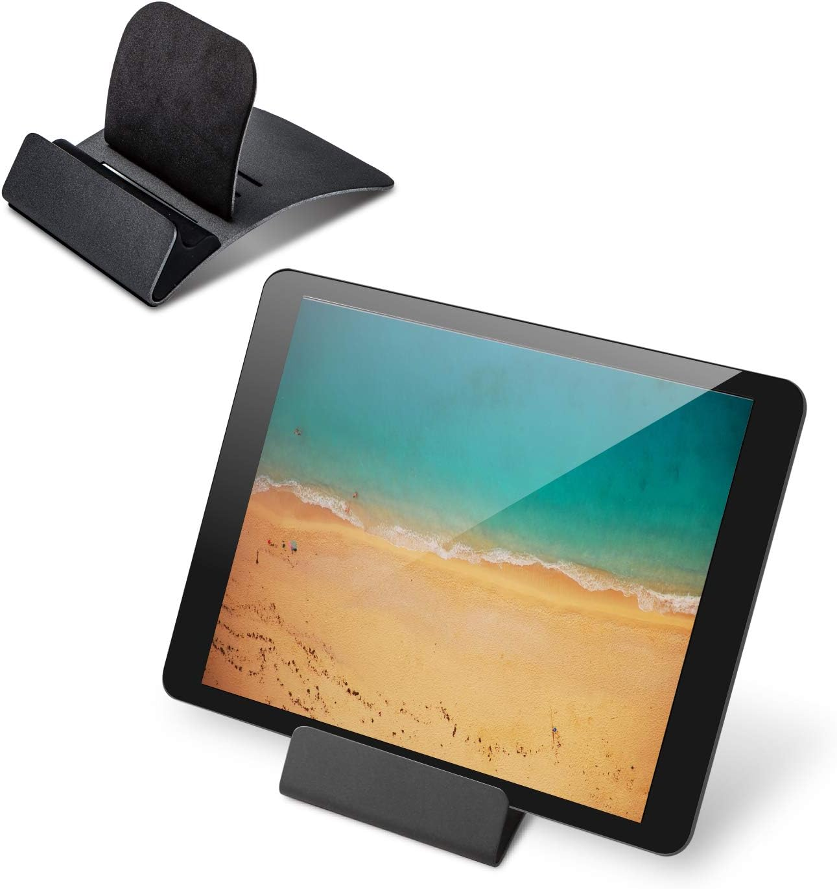
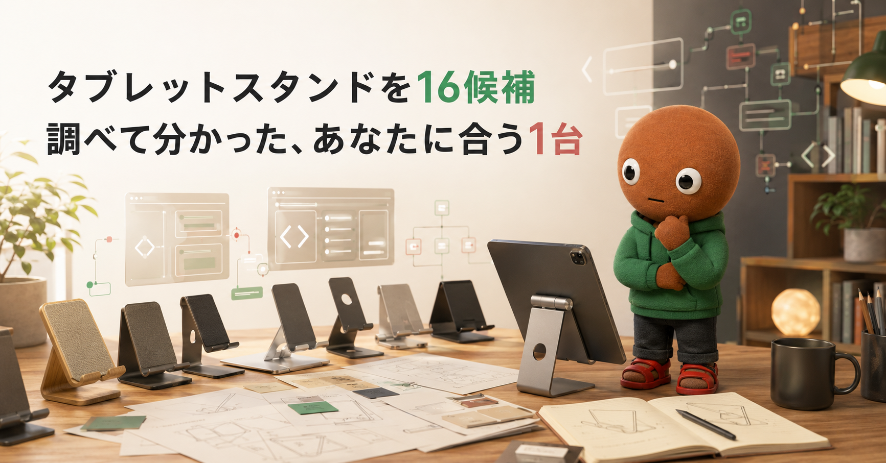
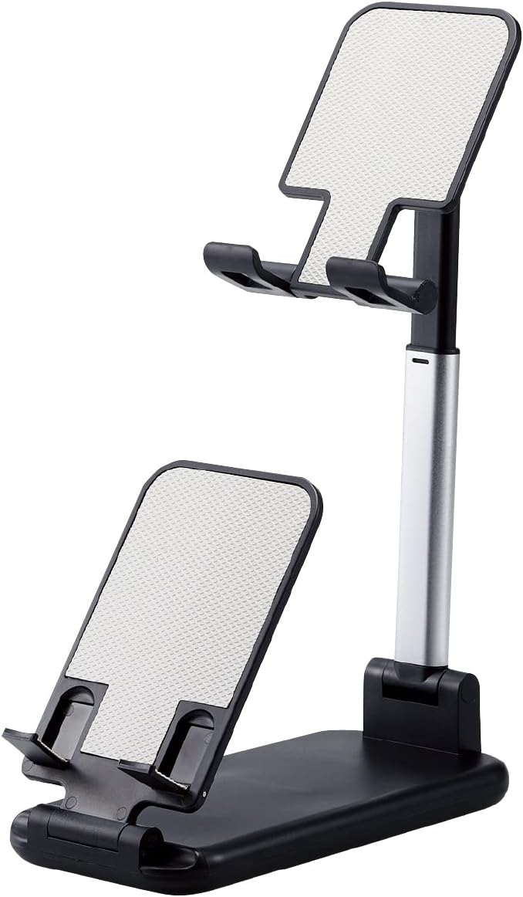
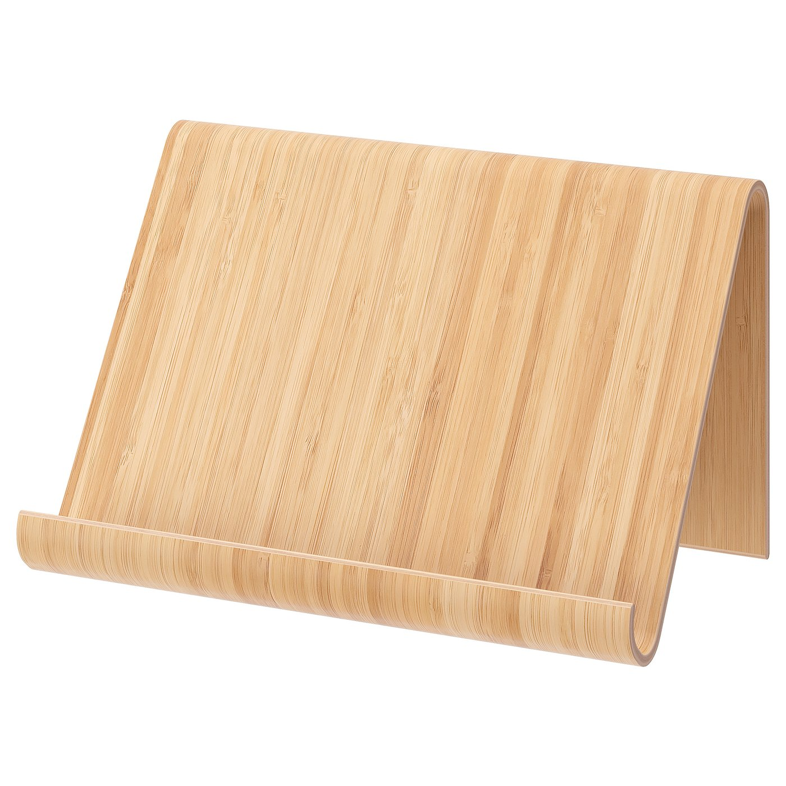
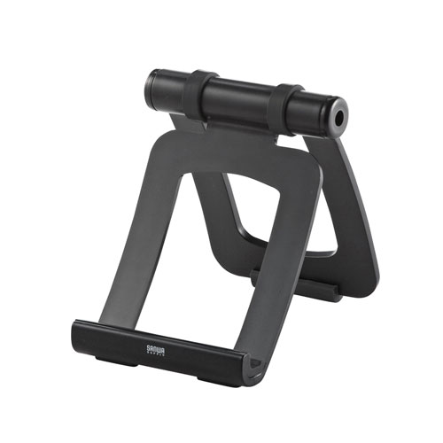
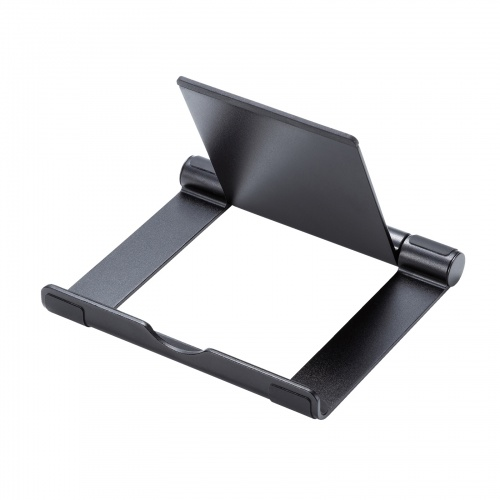
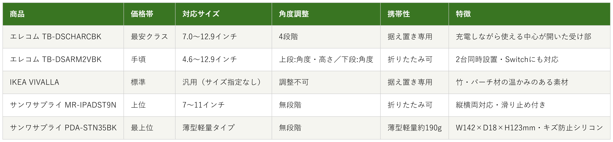

Amazonで見るデスクでタブレットを広げる時間が増えて、片手で支えながらの作業に疲れてきた人へ
タブレットスタンド16候補を調査。対応インチ数・角度調整の方式・携帯性から、選び方の違う5商品を比較しました。
自分に合うタブレットスタンドを探す
この記事はAmazonアソシエイト・プログラムの参加者として、紹介料を得る場合があります（PR）。仕様は調査時点の情報です。
16候補から、選び方の違う5商品に絞りました。まずは気になる1台へ。向いている人・向いていない人と、低評価レビューもまとめています。
あなたの使い方に合う、1台を。

Amazonで見る
Amazonで見る
Amazonで見る
Amazonで見る
Amazonで見る横にスワイプして、5商品を見比べる
調べてわかったのは、基準はシンプルでした。
1つ目は「対応インチ数」。自分のタブレットのサイズが、対応範囲に収まっているかで使えるかどうかが決まります。
2つ目は「角度調整の方式」。数段階だけの固定式か、無段階で細かく変えられるかで、使い心地が変わります。
3つ目は「携帯性」。据え置き専用か、折りたたんで持ち運べるかで、向いてる使い方が変わります。
価格帯には、かなり幅がありました。

価格帯・対応サイズ・角度調整方式・携帯性・特徴の比較（価格帯は最安クラス〜最上位の5段階）
選ぶ決め手とにかく安さを重視するなら、この1台です。
参考：Amazonレビューを基にした低評価傾向の集約
タブレット用スチールスタンド
TB-DSCHARCBKは、
5商品で一番手頃です。
背面パーツを差し込む位置によって、
4段階に角度調整できます。
対応サイズは7.0〜12.9インチです。
ホルダー部の受け部分は
中心が開いているため、
設置したまま充電ケーブルを接続できます。
ホルダー部には約10mmのマチ幅があり、
薄いケースを付けたままでも
設置できます。
選ぶ決め手複数台設置を重視するなら、この1台です。
参考：エレコム類似製品のレビュー傾向を基にした参考情報
端末2台を縦列配置できる
タブレットスタンド
TB-DSARM2VBKは、
5商品で唯一、
2台同時設置に対応しています。
下段スタンドは角度、
上段スタンドは角度と高さの
調節ができます。
対応サイズは4.6〜12.9インチで、
NINTENDO SWITCHにも対応しています。
折りたたみが可能で、コンパクトに収納できます。
選ぶ決め手素材とデザインを重視するなら、この1台です。
参考：IKEA公式サイトの会員レビューを基にした集約
VIVALLAタブレットスタンドは、
5商品で唯一、
竹を使ったデザインです。
バーチ材突き板・竹材突き板に
透明アクリルラッカーを仕上げた素材で、
温かみのある見た目です。
サイズはW26×D16×H15.5cmで、
机上に置くほか、専用レール（別売）に
掛けて使うこともできます。
選ぶ決め手携帯性を重視するなら、この1台です。
参考：Amazonレビューを基にした低評価傾向の集約
タブレット用スタンド
MR-IPADST9Nは、
折りたたんでコンパクトに収納できます。
フレームを開くだけで
角度を無段階で調整できて、
縦置き・横置きの両方に対応します。
フレームと底面には
滑り止めが施されていて、
対応サイズは7〜11インチです。
選ぶ決め手角度調整の自由度を重視するなら、この1台です。
参考：Amazonレビューを基にした集約
タブレット用アルミスタンド
PDA-STN35BKは、
5商品で最も薄型・軽量なタイプです。
角度を無段階で調整できて、
持ち運びにも便利な
薄型軽量タイプです。
サイズはW142×D18×H123mm、
重さは約190gです。
底面にはシリコンゴムの滑り止めが付いています。
デスクでタブレットを広げる時間が増えて、片手で支えながらの作業に疲れてきました。
ノートPCスタンドやモバイルディスプレイ用のスタンドは持っていても、タブレット専用のスタンドは別物だと気づきました。なので今回、マイベストのタブレットスタンドおすすめランキングと、価格.comの検索結果、各メーカー公式サイトを使って調査しました。
各商品ごとに、向いてる人・向いてない人も調べているので、自分に合ったタブレットスタンドを探してみてください。
今回、マイベストのタブレットスタンドおすすめランキングと、価格.comの検索結果、各メーカー公式サイトを使って調査しました。
LISEN1機種・UGREEN1機種・Lomicall1機種・Kasaqua1機種・Klearlook1機種・BoYata1機種・ノーブランド品1機種・ジェネリック品1機種・エレコム3機種・サンワサプライ4機種・IKEA1機種、という16候補です。
この中から、5つに絞りました。
マイベストで1位に紹介されていたLISENのiPadスタンドは、サクラチェッカーで「高リスク」判定を受けていたため見送りました。
UGREENのアルミタブレットスタンドとLomicallのタブレットスタンドも、サクラチェッカーで「要注意メーカー」判定を受けていたため見送りました。
寝ながら使えるアーム型のKasaquaも、「要注意」判定とギフト券評価の指摘があったため見送りました。
KlearlookのST01と、BoYataのタブレットスタンドは、公式サイトでの一次情報を確認できず、出典の薄さから見送りました。
マイベストで上位だったノーブランド品とジェネリック品は、製造元が不明で判断材料が薄いため対象外としました。
エレコムのZアーム型床置きスタンド（TB-DSZARMFBK）は、重さ約3kgの床置き専用タイプで、今回の「デスクで使う」というテーマと条件が合わず見送りました。
サンワサプライのクランプアームホルダー（PDA-STN85BK）は、モバイルディスプレイとの兼用モデルで、役割がモバイルディスプレイ用スタンドと重複するため対象外としました。
サンワサプライのキャスター付きスタンド（CR-LASTTAB34W）は、用途が大型什器寄りで、今回のテーマと外れるため見送りました。
上の16候補とは別に、サクラチェッカーが「要注意」「高リスク」と判定した商品をあらためて3つ調べました。
個別レビュー本文の真偽までは検証できないため、機械的に検出された事実だけを正直に書きます。
LISENのiPadスタンドは、レビュー件数2,014件と、カテゴリ平均297件を大きく上回っていました。「要注意メーカー」「海外販売ショップ（中国）」「日本人サクラレビューの可能性大」とも書かれていました。
Mokastarのタブレットスタンドは、「怪しい製品名（SEO狙い）」「海外販売ショップ（中国）」という指摘を受けていました。
Trywonのタブレット&スマホ両用スタンドは、レビュー件数1,370件で、カテゴリ平均297件の462%に達していました。「ギフト券で高評価買収」「画像添付レビューの異常な多さ」「怪しい日本語評価」とも明示されていました。
3つとも共通していたのは、中国の販売元と推定されることでした。サクラチェッカー自身も、スタンドカテゴリ全体でサクラ製品が54%を占め、通常品より平均42%安く売られていると紹介していました。信頼できる代替として挙げていたのはエレコムで、今回私が採用したエレコム・サンワサプライと一致していました。
16候補以上を比較していて、一番驚いたのは、マイベストで1位に紹介されていたLISENのiPadスタンドが、サクラチェッカーでは「高リスク」判定だったことでした。
ランキングサイトの推薦と、レビューの信頼性分析は、同じとは限らないと実感しました。
もう1つの発見は、スタンドカテゴリ全体の実態でした。サクラチェッカーによると、スタンドカテゴリではサクラ製品が全体の54%を占めていて、粗悪品ほど価格を安く見せかける傾向があるそうです。
「安いから」だけで選ぶと、失敗しやすいカテゴリだと分かりました。
ここまで読んでもまだ迷ったら、折りたためて角度も無段階に調整できるサンワサプライ MR-IPADST9Nが最初の1台におすすめです。
縦置き・横置きの両方に対応していて持ち運びもしやすいので、外しにくい選択です。
Amazonで見る→Q. タブレットスタンドは何を基準に選べばいい？
A. まず「対応インチ数」で自分のタブレットのサイズに合うかを確認し、次に「角度調整の方式」を決めるのがおすすめです。
Q. ノートPCスタンドと兼用できる？
A. 一部のアーム型は兼用できますが、耐荷重や可動域が異なるため、ノートPC用途がメインならノートPCスタンド専用モデルを選ぶのがおすすめです。
Q. 縦置きと横置き、どちらもできる？
A. 今回の5商品はいずれも縦置き・横置きの両方に対応しています。
Q. 安いものと高いもの、何が違う？
A. 今回の5商品で価格差につながっていたのは、角度調整の方式（段階調整か無段階調整か）と、複数台設置などの機能の有無でした。